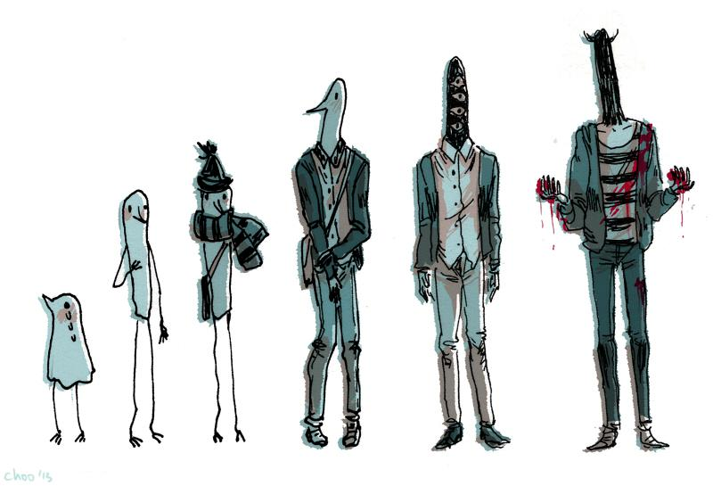

En esta página somos fans del mejor manga de la historia, Punpun, y de su creador, Inio Asano. Además, mostramos nuestra opinión crítica sobre otras obras que consideramos mucho menos interesantes.
